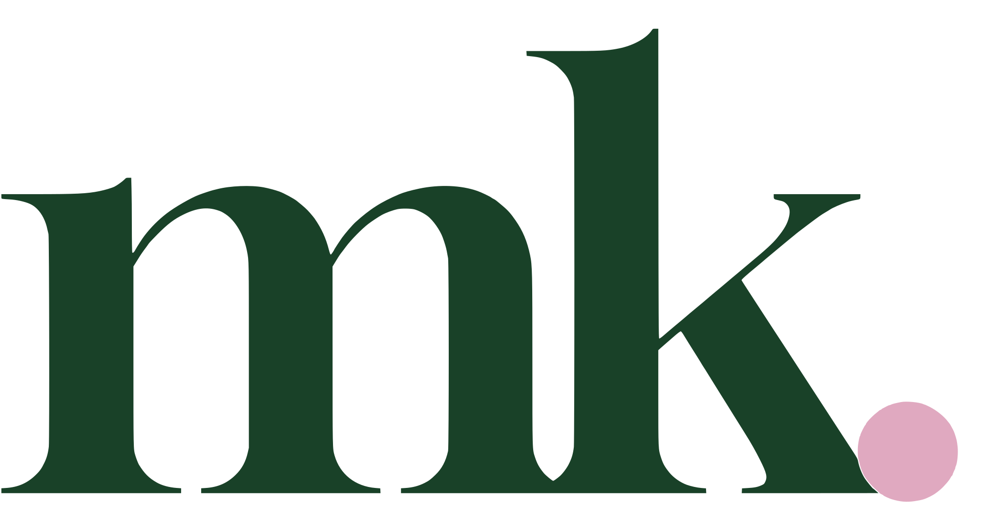

Swift · Python2025
gym bro ↗
A personalized iOS workout companion with nearly 100 workouts, feedback-based scoring, and cloud-synced user data.


software engineer ● tampa, fl
CS @ UCI. Currently SWE @ Citi.
local time loading...
Hi! I'm Minha Kim, a software engineer at Citi and a Computer Science graduate from the University of California, Irvine.
I have always enjoyed working with computers and browsing the internet, so choosing CS as a major came naturally. The best part of being a programmer is that the learning never stops; there is always a new concept or technology to explore.
Outside of work, I like to hike, play and watch soccer, and make small side-projects.
A personalized iOS workout companion with nearly 100 workouts, feedback-based scoring, and cloud-synced user data.
A Netflix-inspired app with encrypted login, reCAPTCHA, full-text search, and auto-complete across 9,000+ movies.
A puzzle game set in a climate-changed future. Focused on player movement, object handling, and room puzzles.
Compared four classifiers on the CIFAR-10 dataset using Python, PyTorch, scikit-learn, and NumPy.
Turn an image into a twenty-song Spotify playlist by translating color into mood.
A colorful, keyboard-controlled take on the classic matching game.